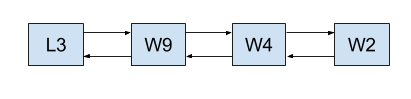
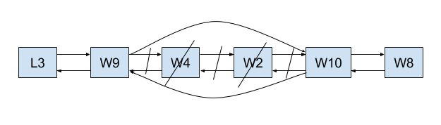

CMPE 160: INTRODUCTION TO OBJECT
ORIENTED PROGRAMMING
Project 2
Deadline: 15.05.2016, 23.59 AM.
In this project, you are expected to design and develop a program that can be used to simulate
transportations done using freight trains.
1 Description
You are going to simulate a transportation scenario. According to this scenario, you are given
several cities. In each city, there exists a train station which consists of two garages; one for
locomotives and the other for waggons. Your task consists of several missions. Each mission
requires you to assemble a simulated train at the specified city and by following the given route,
arrive at the destination city, leaving and taking waggons from the cities you visit. You are
expected to create a program that reads the input about the trains from the input files and after
completing the missions, produces an output file exhibiting the final state of the stations at each
city.
1.1 Cities
- The data about the cities can be found in data/dests.txt.
- In this file, you are given several cities as possible destination points for your simulations.
1.2 Stations
- In each city you are given, there exists a train station.
- In a station, there are two garages: a waggon garage and a locomotive garage.
- A waggon garage keeps the waggons in the station.
- In our scenario, waggon garages are modeled as stacks that are following the last-in-first-out
policy.
- The initial configuration of waggon garages in each city is given in data/waggons.txt.
- A locomotive garage keeps the locomotives in the station.
- In our scenario, locomotive garages are modeled as priority queues. When asked for a
locomotive, they should retrieve the most powerful locomotive inside the garage.
- The initial configuration of locomotive garages in each city is given in data/locs.txt.
- A train is modeled as a doubly linked list. Keep in mind that Locomotive class extends
Waggon class. Therefore, you will have doubly linked lists of waggons as your trains.
1.3 Missions
- The missions are given in data/missions.txt.
- A misson has the following format: A-B-C-x-y-z1,z2...
- A: Starting station.
- B: Midway station.
- C: Target station.
- x: Number of waggons you take from the starting station.
- y: Number of waggons you take from the midway station.
- z: Indices of the waggons you must leave at the midway station.
- A complete mission requires you to complete the following procedure:
- Assemble a train at the starting city, A. Since a train is modeled as a doubly linked
list of waggons, you need to start with the most powerful locomotive you have in the
locomotive garage and insert it into the head of your list. Afterwards, you need to insert
x waggons the waggon garage at city A to this list.
- Append y waggons from the midway station, B, to your list.
- Leave waggons z1,z2... at midway station.
- Continue to your journey and disband the train at target station, C. When disbanding the
train, put the locomotive into the locomotive garage and waggons into waggon garage
at C.
- During a mission you need to pay attention to the order of insertions and removals.
- An example run is given in Section 4.
2 Details
In the source code that is provided to you, there are three packages: intfs, adts and runnable.
- runnable contains your main class, as usual and is responsible for the operation of the
program.
- intfs package contains three interfaces; StackIntf, PriorityQueueIntf and
DoublyLinkedListIntf. You are expected to design and implement the Abstract Data Types
(ADTs) using these interfaces.
- You are expected to develop generic classes as your ADTs. In the adts package, there are 3
incomplete classes that will be the ADTs you are expected to use in the project. The most of
the structure for creating generic ADTs is given in the code you are provided with.
- During implementation, please pay attention to the markers we placed. Write your code
between // CHANGES START BELOW THIS LINE and // CHANGES END ABOVE
THIS LINE lines.
- IMPORTANT: Try to put as small code as possible inside the main method. Create other
methods or classes, preferably, and call them in you main method. Main method should be
quite comprehensible.
3 Output File
Your program should generate an output file exhibiting the final status of the stations. The output format
we picked has to be followed strictly. The format is as follows:
4 Example Run
- Assume that you are given the following files:
- Reading the input from these files, the initial configuration of the stations as follows:
- After reading the mission, assemble the following train, leaving the station in Istanbul as
below:

- The train takes 2 waggons from Ankara and leaves the first and second waggon after the
locomotive at Ankara (Locomotive is not counted, waggon indices start from 0). Pay attention
to the order.

- After the train reaches to Diyarbakir, it is disbanded at this city. Waggons and the locomotive
are inserted to the corresponding garages. Again, pay attention to the order.
- The output is given in data/result.txt file, as follows: